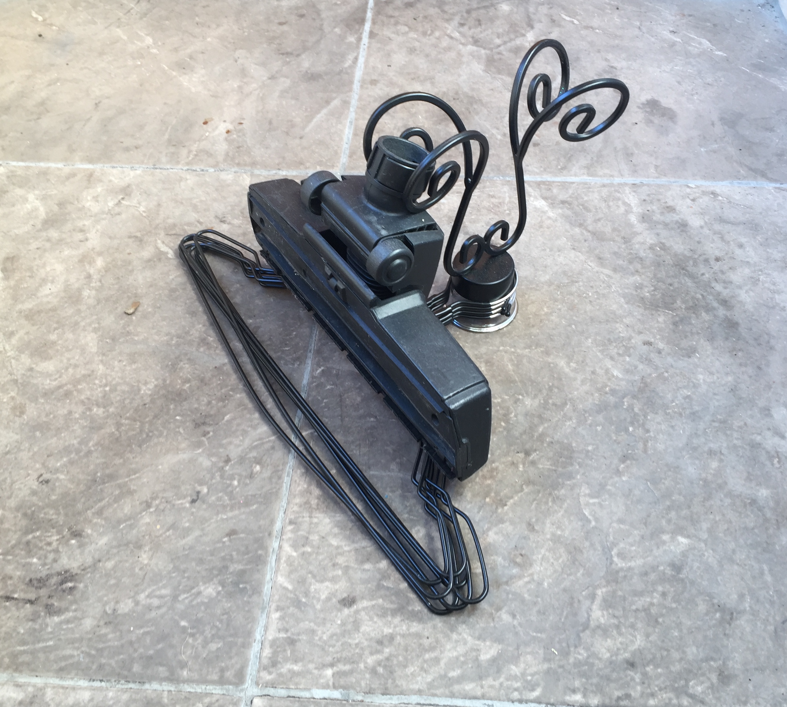

Links to this entry:
indexlinked entries ⤳
bricolage
Over time I have developed up a practice of collecting seemingly useless yet somehow inciting objects.
Most commonly objects are found which, by others, have been labelled as trash.
These objects are then used when some spatial or physical need arises.
Trying to achieve some aim, perhaps making some kind of container or hanging some object at a certain angle, the collection of inciting objects becomes pieces of a puzzle. What combination and arrangement of objects will respond well to the challenge faced?
Sometime back I had to create a vertical monitor stand. One combination of inciting objects which solved the puzzle was a combination of some clothe-hangers, a vacuum head, and a candleholder:
